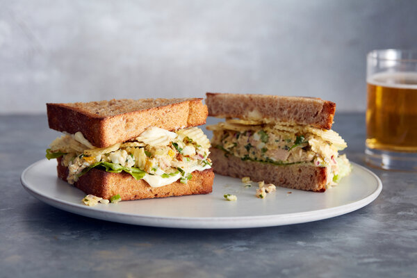

Tuna Crunch Sandwich

A classic tuna fish and potato chip sandwich that really hits the spot.
Ingredients
1 (5-ounce) can solid white albacore or skipjack tuna (see Tip)
1 hard-boiled egg, peeled
1 celery rib, finely minced
3 tablespoons extra-virgin olive oil (see Tip)
2 tablespoons finely minced red onion, shallot or scallions
2 tablespoons finely minced fresh parsley, chives, tarragon or a mix (optional)
2 tablespoons mayonnaise, plus more for spreading (see Tip)
1 tablespoon sweet pickle relish or chopped dill pickles (optional)
2 teaspoons freshly squeezed lemon juice
A few large handfuls of hearty potato chips or corn chips (see Tip)
Salt and black pepper
4 slices thick, soft sandwich bread, such as Texas toast, toasted, if desired
2 lettuce leaves, such as iceberg, romaine, green leaf or Bibb
- Open the can of tuna, leaving the lid in place after opening it. Invert the whole can over the sink and press the lid into the tuna firmly to squeeze out as much excess water or oil as you can. (Be careful not to cut your fingers on any sharp edges). Transfer the tuna to a medium bowl.
- Wash your hands well, then grab the boiled egg and squeeze it through your fingers into the bowl with the tuna. Add the celery, olive oil, onion, herbs (if using), mayonnaise, relish (if using) and lemon juice. Using a fork, gently fold together all the ingredients, trying to leave the tuna in relatively large chunks. Grab a few chips and, using your hands, crumble them into the bowl. Season lightly with salt and pepper, and fold again to combine. Taste and adjust seasoning to taste — more salt, pepper and lemon juice if it tastes bland, and more olive oil or mayonnaise if it tastes dry.
- When ready for lunch, spread each slice of bread generously with mayonnaise. Place lettuce on each bottom slice of bread, then top each with half of the tuna salad mixture. Add a generous handful of potato chips on top of each (more than seems reasonable), then close the sandwiches. Press down firmly so the chips break and embed themselves into the tuna salad and the bread. Cut into triangles and serve with extra chips on the side.
Tip: You can use oil- or water-packed tuna here; as long as the tuna is well drained, either will work just fine. Save the expensive stuff for other recipes. This recipe calls for extra-virgin olive oil, but for a more classic flavor, omit the olive oil and use up to 4 tablespoons of mayonnaise instead. For the chips, Ruffles, Fritos or kettle-style chips work best (especially salt and vinegar flavor), but again, the ideal sandwich uses whatever chips you happen to enjoy or have on hand.
Return to Main Page